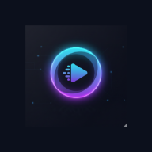

AO VIVO
Esportes ao vivo agora
Os horários dos jogos saem todo dia no nosso Instagram. Na hora do jogo, toque no botão abaixo.
▶ Assistir agora Ver horários no Instagram- 📱 Celular, tablet e computador
- ⚡ Sem cadastro

Os horários dos jogos saem todo dia no nosso Instagram. Na hora do jogo, toque no botão abaixo.
▶ Assistir agora Ver horários no Instagram